เห็นทุกสาขา จัดการราคา สาขา บัญชีผู้ดูแล นโยบาย และตรวจ Audit ได้ทั้งระบบ
ROBOSS · OPERATOR HANDBOOK
คู่มือใช้งานหลังบ้าน
เปิดภาพ ดูหมายเลข แล้วทำตามทีละจุด คู่มือนี้อธิบายว่าต้องกดตรงไหน สิ่งใดจะเกิดขึ้น และเหตุผลที่ต้องทำในแต่ละงาน
เปิดสารบัญ
เริ่มต้นให้ถูกบทบาท
เมนูและข้อมูลที่เห็นขึ้นอยู่กับบัญชีที่ใช้เข้าสู่ระบบ หากหาเมนูไม่พบ ให้ตรวจบทบาทและสาขาที่ได้รับมอบหมายก่อน
เห็นเฉพาะสาขาที่ได้รับสิทธิ์ ใช้ดูคิว เครื่อง ลูกค้า รายรับ และตั้งค่าที่ HQ อนุญาต
ใช้เมนู รับชำระหน้าร้าน และ คิวและรอบล้าง เพื่อลดความผิดพลาดหน้าจุดบริการ
1.1 · SIGN IN
เข้าสู่ระบบ
ใช้ยืนยันตัวผู้ปฏิบัติงาน ทุกการทำรายการสำคัญจะผูกกับบัญชีนี้ในประวัติ Audit
- กรอกอีเมลของตนเองในช่อง อีเมล
- กรอกรหัสผ่าน แล้วใช้รูปตาเมื่อต้องการตรวจตัวอักษร
- กด เข้าสู่ระบบหลังบ้าน เพียงครั้งเดียวและรอหน้าแดชบอร์ด
ห้ามใช้บัญชีร่วมกันบัญชีเดโมและรหัสผ่านที่เห็นในภาพใช้เฉพาะ Local ต้องเปลี่ยนก่อนเปิด Production
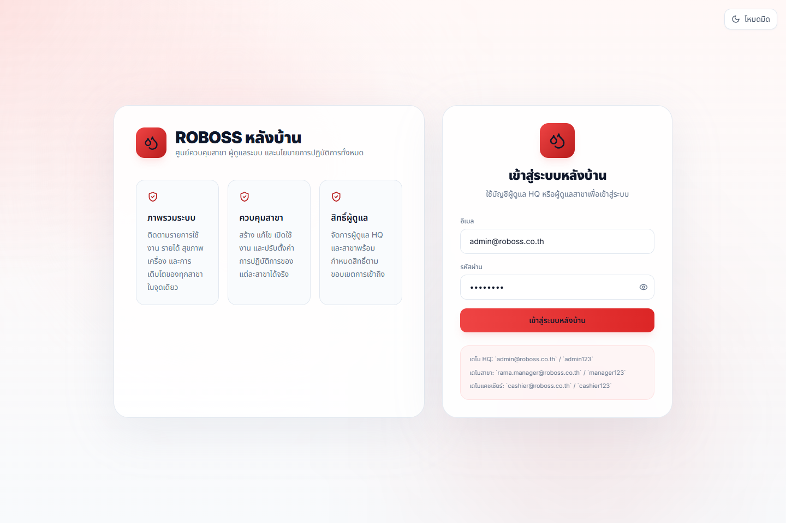
- 1อีเมลประจำตัว
- 2รหัสผ่านและปุ่มดูรหัส
- 3ยืนยันเพื่อเข้าสู่ระบบ
1.2 · ORIENT
อ่านแดชบอร์ดและเลือกสาขา
เริ่มทุกกะด้วยการตรวจภาพรวมและขอบเขตสาขา ป้องกันการแก้ข้อมูลผิดสาขา
- เลือกงานจากเมนูซ้าย เมนูที่กำลังเปิดจะมีแถบแดง
- บัญชี HQ ใช้ตัวเลือก ทุกสาขา เพื่อกรองข้อมูล ส่วนบัญชีสาขาจะถูกจำกัดอัตโนมัติ
- ตรวจรายได้ รอบล้าง ความพร้อมเครื่อง และรายการที่ต้องดู ก่อนเริ่มทำงานอื่น
ออกจากระบบเมื่อเลิกใช้กดไอคอนประตูมุมขวาบน โดยเฉพาะเครื่องที่มีพนักงานใช้ร่วมกัน
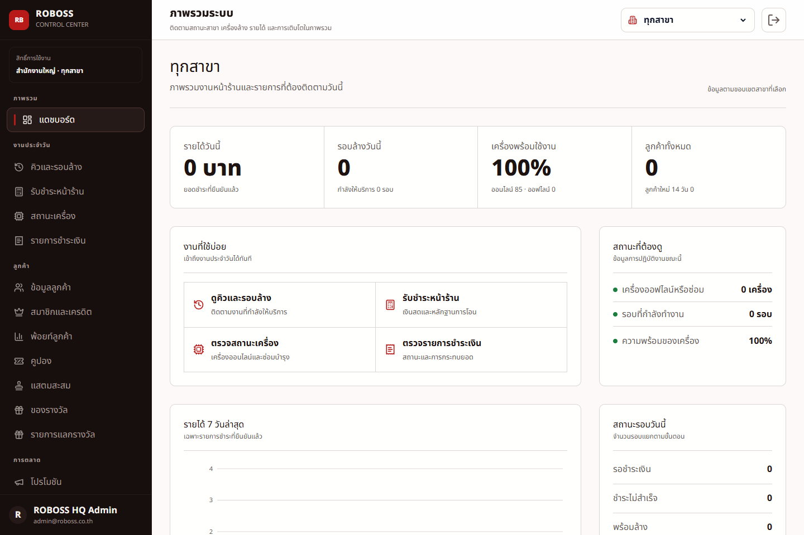
- 1เมนูงานทั้งหมด
- 2เลือกขอบเขตสาขา
- 3ออกจากระบบ
งานประจำวันหน้าสาขา
ลำดับที่แนะนำคือ ตรวจคิว → ตรวจเครื่อง → รับชำระ → ตรวจสถานะเงิน เมื่อข้อมูลผิดปกติให้หยุดและตรวจหลักฐานก่อนสั่งเครื่อง
2.1 · QUEUE
คิวและรอบล้าง
ใช้ติดตามงานตั้งแต่รอชำระ พร้อมเริ่ม กำลังบริการ จนถึงเสร็จสิ้น
- กดเมนู คิวและรอบล้าง
- เลือกแท็บสถานะเพื่อจำกัดรายการที่ต้องจัดการ
- เลือกรายการทางซ้ายเพื่อเปิด Service Checklist และ Log ทางขวา
ใช้เมื่อเกิดข้อโต้แย้งLog ระบุลำดับเหตุการณ์ของรอบล้างและช่วยตรวจว่าเครื่องเริ่มหรือจบเมื่อใด
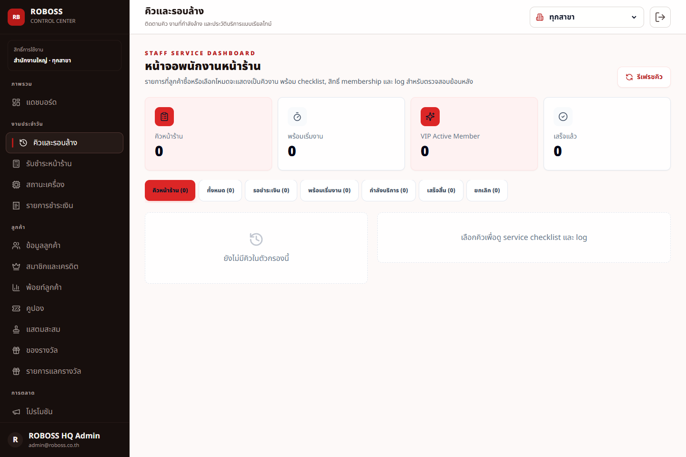
- 1เปิดหน้าคิว
- 2กรองตามสถานะ
- 3รายละเอียดและ Log
2.2 · CASHIER
รับชำระหน้าร้าน
สร้างรายการสำหรับลูกค้า Walk-in ที่จ่ายเงินสดหรือยื่นสลิปกับพนักงาน
- เลือกสาขา เครื่อง แพ็กเกจ และขนาดรถให้ตรงกับหน้างาน
- กรอกชื่อลูกค้า เบอร์โทร หรือ LINE User ID เท่าที่มี
- เลือก เงินสด หรือ โอน/สลิป แนบหลักฐาน แล้วตรวจยอดก่อนยืนยัน
ยืนยันเมื่อรับเงินจริงแล้วเท่านั้นรายการจากหน้านี้สร้างสถานะยืนยันพร้อม Audit Log ทันที
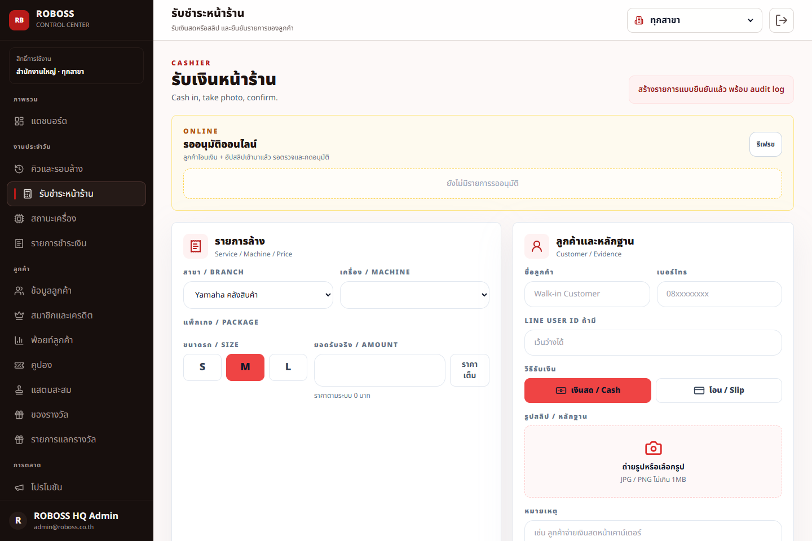
- 1เลือกรายการล้าง
- 2ข้อมูลลูกค้า
- 3วิธีรับเงินและหลักฐาน
2.3 · MACHINE
ตรวจและควบคุมเครื่อง
ดูว่าเครื่องว่าง จองแล้ว กำลังล้าง ซ่อมบำรุง หรือออฟไลน์ พร้อมตรวจสัญญาณล่าสุด
- ดูจำนวนรวมและสถานะจากแถบสรุปด้านบน
- หาเครื่องจากชื่อสาขา รหัสเครื่อง และ ESP Device ID
- ใช้คำสั่งรีสตาร์ต เข้าโหมดซ่อม หรือเช็กสัญญาณเฉพาะเมื่อได้รับมอบหมาย
ความปลอดภัยมาก่อนตรวจพื้นที่และยืนยันว่าไม่มีคนอยู่ในแนวเครื่องก่อนส่งคำสั่งควบคุม
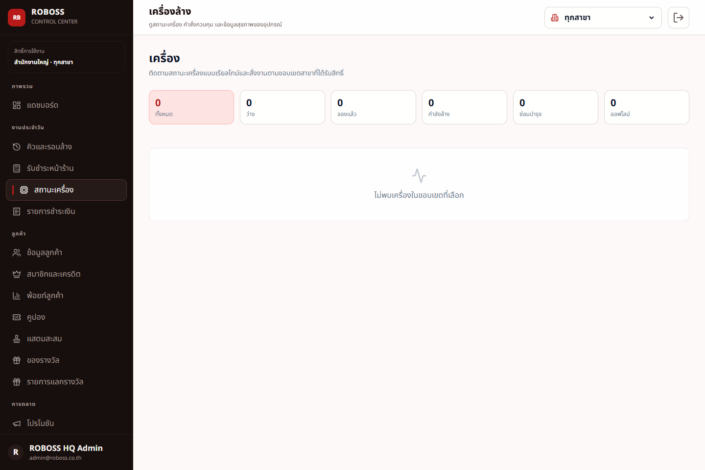
- 1สรุปสถานะทั้งหมด
- 2ข้อมูลประจำเครื่อง
- 3คำสั่งควบคุม
2.4 · PAYMENT
ตรวจรายการชำระเงิน
ค้นหาด้วยรหัสอ้างอิง ดูสถานะจากผู้ให้บริการ และกระทบยอดเมื่อจำเป็น
- ค้นหารหัสอ้างอิงหรือรหัสผู้ให้บริการ
- กรองสถานะและ Payment Provider เพื่อลดรายการ
- เลือกรายการจากตารางเพื่อเปิดรายละเอียดและคำสั่งทางขวา
อย่ากดยืนยันจากคำบอกเล่าเทียบยอด เวลา รหัสอ้างอิง และหลักฐานธนาคารก่อน Verify หรือ Reconcile เสมอ
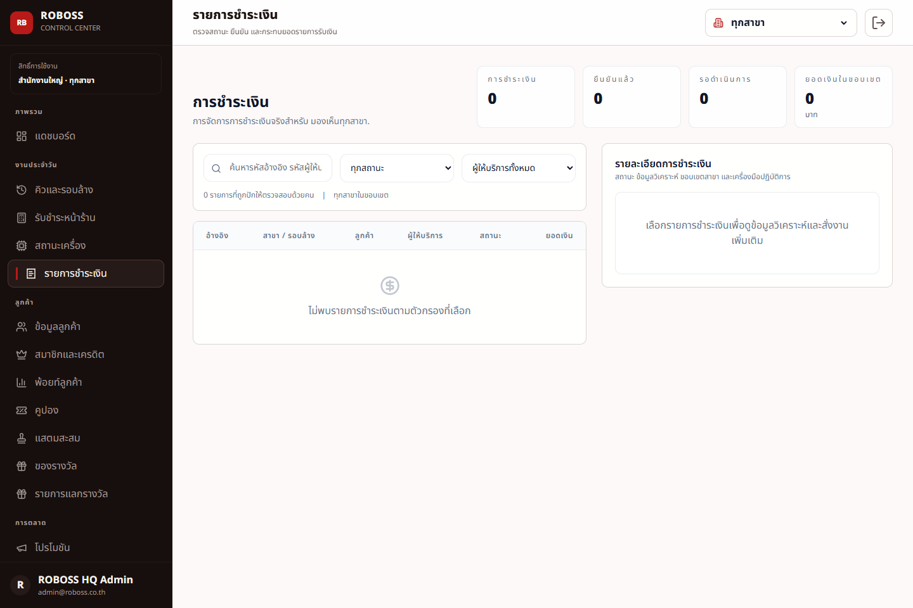
- 1ช่องค้นหา
- 2ตัวกรองสถานะ
- 3รายละเอียดรายการ
ลูกค้า สมาชิก และสิทธิประโยชน์
ข้อมูลกลุ่มนี้มีผลต่อยอดพ้อยท์ เครดิต แสตม และสิทธิ์ของลูกค้า ทุกการปรับมือควรมีเหตุผลและตรวจย้อนหลังได้
3.1 · CUSTOMER
ค้นหาข้อมูลลูกค้า
ใช้ดูระดับสมาชิก แต้ม รถ ประวัติการล้าง และยอดใช้จ่ายของลูกค้า
- ค้นหาด้วยชื่อ เบอร์โทร หรือ LINE User ID
- ตรวจข้อมูลสรุปจากตารางก่อนดำเนินการ
- กดลูกศรท้ายแถวเพื่อเปิดรายละเอียดของลูกค้าคนนั้น
ค้นหาให้เจอก่อนสร้างใหม่ช่วยป้องกันบัญชีลูกค้าซ้ำและประวัติแยกกันหลายบัญชี
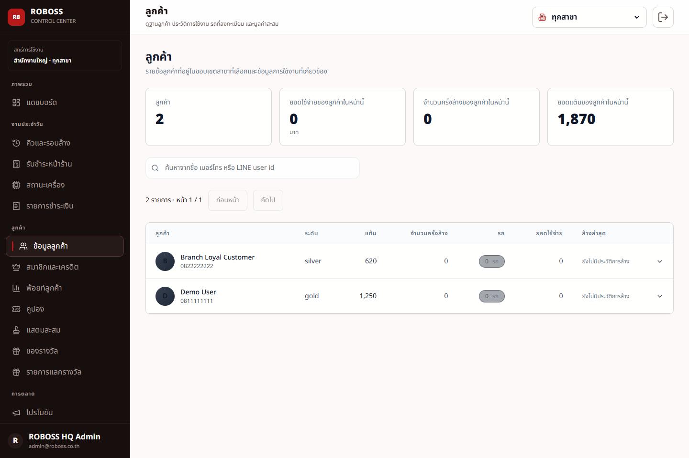
- 1ค้นหาลูกค้า
- 2ข้อมูลสรุป
- 3เปิดรายละเอียด
3.2 · MEMBERSHIP
สมาชิกและเครดิต
ติดตามสมาชิกที่ใช้งานอยู่ เครดิตคงเหลือ และคำขอซื้อแพ็กเกจที่รอตรวจสลิป
- เลือกมุมมองสมาชิก แผน หรือรายการซื้อที่รอตรวจ
- ค้นหาด้วยชื่อ เบอร์โทร แพ็กเกจ หรือเลขอ้างอิง
- เปิดสลิป ตรวจข้อมูล แล้วกดอนุมัติหรือปฏิเสธพร้อมเหตุผล
อนุมัติแล้วมีผลต่อสิทธิ์ทันทีตรวจชื่อบัญชี ยอด และเลขอ้างอิงให้ครบก่อนกด
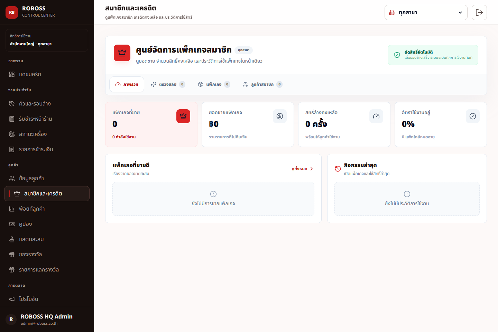
- 1เลือกมุมมอง
- 2ค้นหารายการ
- 3ตรวจและตัดสินใจ
3.3 · POINTS
พ้อยท์ลูกค้า
ดูยอดคงเหลือ ประวัติ และปรับยอดเฉพาะกรณีที่มีหลักฐานรองรับ
- ค้นหาลูกค้าจากชื่อหรือเบอร์โทร
- กด ดูประวัติ เพื่อเทียบรายการรับและใช้พ้อยท์
- หากต้องปรับยอด ให้ระบุจำนวนและเหตุผลที่ตรวจสอบได้
สิทธิ์ HQ เท่านั้นการเพิ่มหรือลดพ้อยท์ต้องมี Ticket หลักฐาน หรือเหตุขัดข้องของเครื่อง
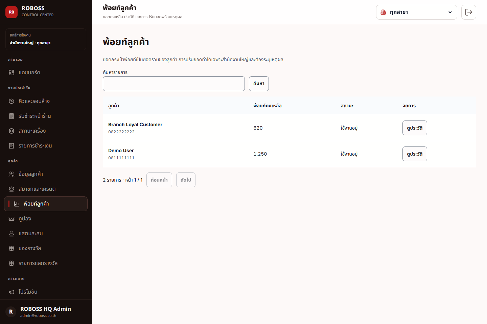
- 1ค้นหาลูกค้า
- 2เปิดประวัติ
- 3รายการถัดไป
3.4 · COUPON
คูปอง
สร้างเงื่อนไขส่วนลด กำหนดสาขา ช่วงเวลา จำนวนสิทธิ์ และติดตามการแจกหรือซื้อ
- เลือกประเภทงานคูปองจากแถบด้านบน
- ค้นหารหัสหรือชื่อ แล้วเลือกรายการที่ต้องการแก้ไข
- ตรวจสถานะ ขอบเขตสาขา และวันหมดอายุก่อนเปิดใช้งาน
ทดสอบเงื่อนไขก่อนเผยแพร่ตรวจขั้นต่ำ ยอดลดสูงสุด และแพ็กเกจที่ใช้ได้ เพื่อไม่ให้ส่วนลดผิด
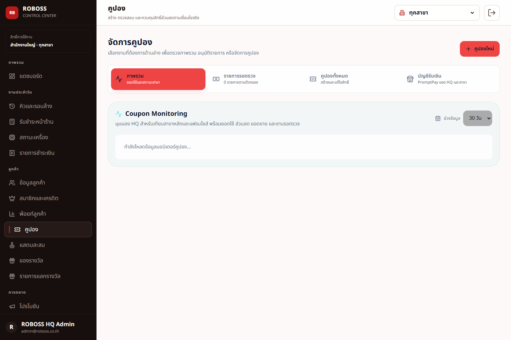
- 1เลือกงานคูปอง
- 2ค้นหารายการ
- 3แก้ไขและตั้งสถานะ
3.5 · REWARD
ของรางวัลและการส่งมอบ
กำหนดรางวัลที่ใช้พ้อยท์แลก และบันทึกเมื่อพนักงานส่งมอบสิทธิ์ให้ลูกค้าแล้ว
- ในเมนู ของรางวัล สร้างหรือแก้ชื่อ ต้นทุนพ้อยท์ จำนวน และสถานะ
- ไปที่ รายการแลกรางวัล เพื่อดูคำขอที่รอส่งมอบ
- กดส่งมอบเมื่อยืนยันตัวลูกค้าและมอบสิทธิ์จริงแล้ว
สถานะส่งมอบคือหลักฐานห้ามกดล่วงหน้า เพราะลูกค้าอาจเสียสิทธิ์โดยยังไม่ได้รับรางวัล
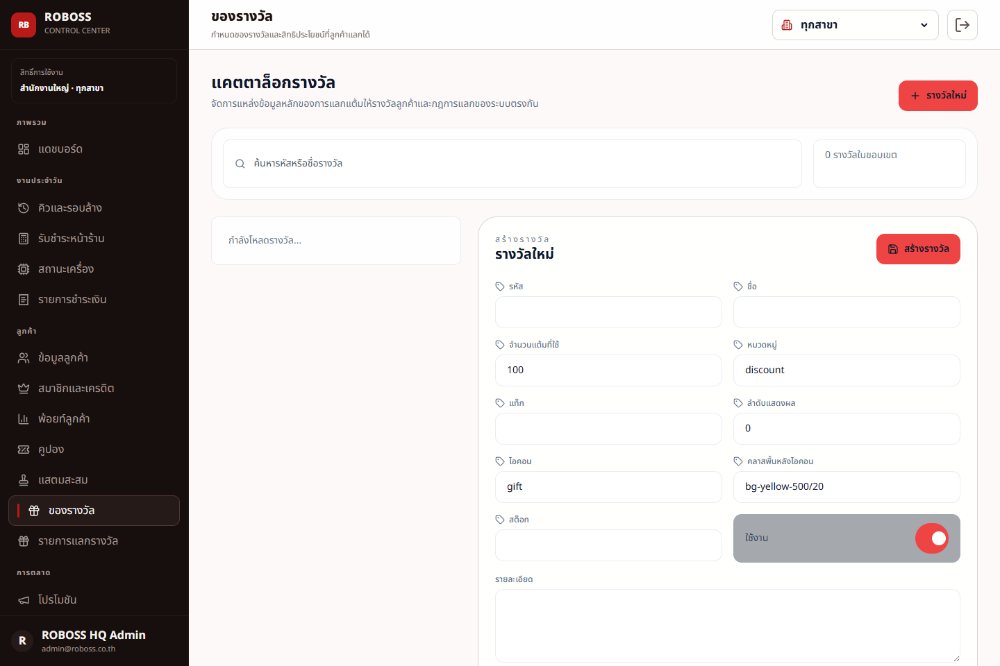
- 1เพิ่มของรางวัล
- 2ค้นหา
- 3แก้ไขสถานะ
3.6 · STAMP
แสตมสะสม
ตรวจยอดแสตมจากรอบล้างจริง และแก้ไขเฉพาะกรณี Event จากเครื่องไม่ครบ
- ค้นหาลูกค้าด้วยชื่อ เบอร์โทร หรือ LINE User ID
- เลือกประวัติแสตมจากรอบล้างและประวัติการปรับมือ
- เมื่อปรับมือ ให้กรอกจำนวนและเหตุผลอย่างเฉพาะเจาะจง
เหตุผลที่ดีเช่น “รอบล้างเลขอ้างอิง… เสร็จ 14:32 แต่เครื่องไม่ส่ง completed event”
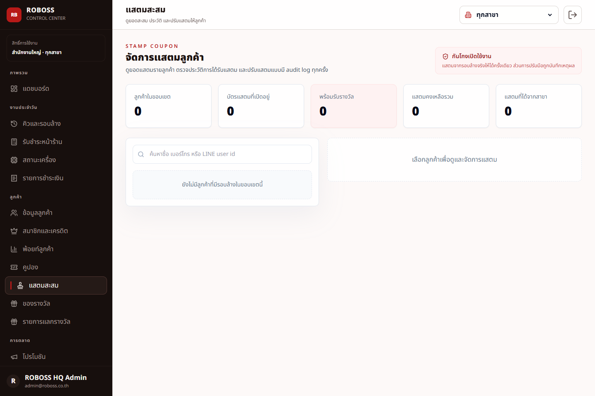
- 1ค้นหาลูกค้า
- 2ดูยอดและประวัติ
- 3ปรับพร้อมเหตุผล
3.7 · FULFILMENT
รายการแลกรางวัล
เป็นคิวกลางสำหรับตรวจคำขอแลกและติดตามว่ารายการใดส่งมอบแล้ว
- กรองสาขาหรือค้นหาชื่อลูกค้าและรางวัล
- ตรวจจำนวนพ้อยท์ วันเวลา และสถานะคำขอ
- กด ส่งมอบรางวัล แล้วใส่หมายเหตุเมื่อมอบจริง
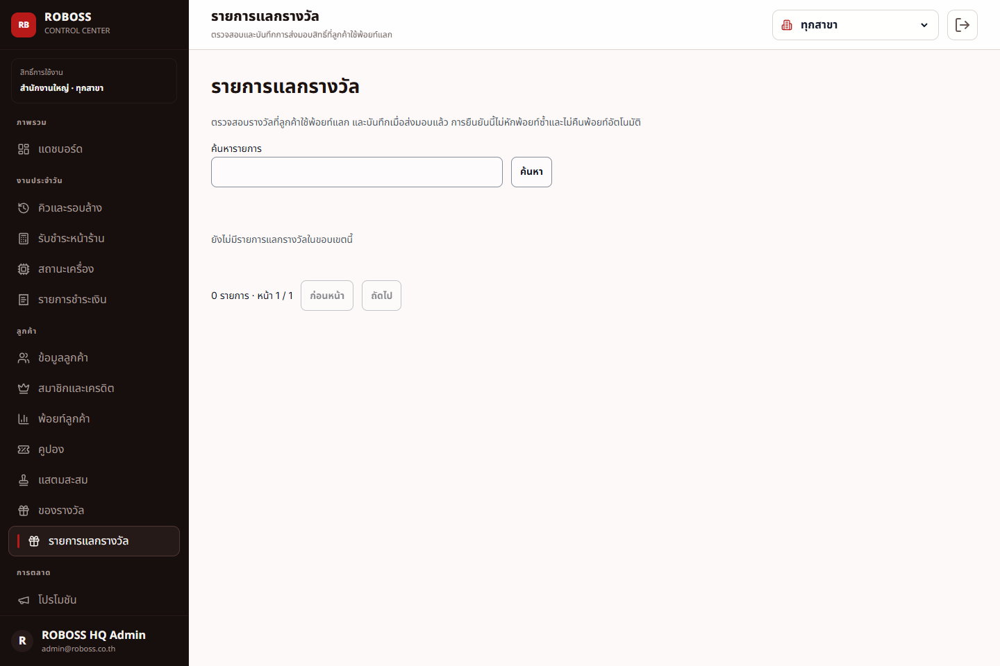
- 1ค้นหาและกรอง
- 2ตรวจคำขอ
- 3บันทึกส่งมอบ
การตลาด ข่าวสาร และเนื้อหา
เนื้อหาที่เปิดเผยแพร่จะกระทบหน้าลูกค้า จึงควรตรวจตัวสะกด ช่วงเวลา ลิงก์ และขอบเขตสาขาก่อนทุกครั้ง
4.1 · CAMPAIGN
โปรโมชัน
จัดการแคมเปญ ข้อเสนอ ช่วงเวลา และภาพที่ลูกค้าเห็นในแอป
- กดเพิ่มโปรโมชันเมื่อต้องการสร้างแคมเปญใหม่
- ค้นหาชื่อหรือข้อความเพื่อแก้แคมเปญเดิม
- ตรวจวันเริ่ม วันสิ้นสุด ขอบเขต และสถานะเผยแพร่
ไม่ลบประวัติโดยไม่จำเป็นปิดใช้งานแคมเปญเก่าเพื่อเก็บข้อมูลย้อนหลังแทนการลบ
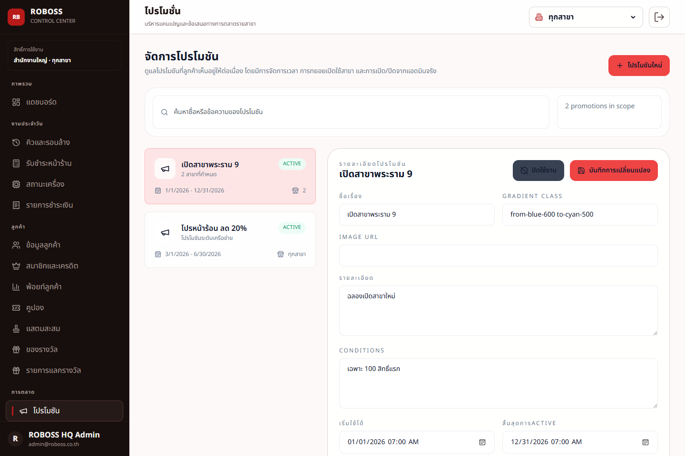
- 1สร้างโปรโมชัน
- 2ค้นหา
- 3แก้ไขและเผยแพร่
4.2 · MESSAGE
ส่งข่าวสาร
ส่งประกาศ แจ้งเตือนบริการ หรือข้อความการตลาดไปยังกลุ่มลูกค้าที่เลือก
- เลือกประเภทข้อความและกลุ่มเป้าหมาย
- เขียนหัวข้อและข้อความให้สั้น ชัด และระบุการกระทำที่ต้องการ
- ตรวจ Preview และขอบเขตผู้รับก่อนกดส่ง
การส่งย้อนกลับไม่ได้ตรวจชื่อสาขา ราคา วันเวลา และลิงก์อย่างน้อยสองรอบ
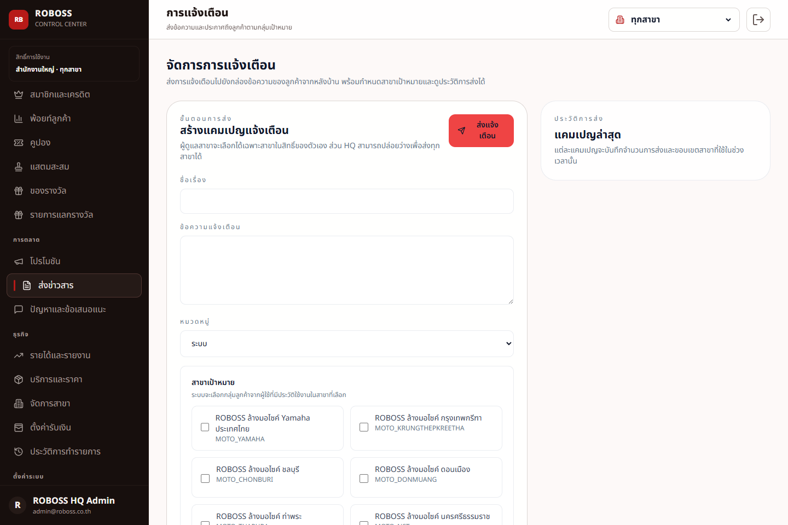
- 1เลือกผู้รับ
- 2เขียนข้อความ
- 3ตรวจและส่ง
4.3 · FEEDBACK
ปัญหาและข้อเสนอแนะ
รับเรื่องจากลูกค้า มอบหมายผู้รับผิดชอบ และเก็บสถานะการแก้ไข
- ค้นหาด้วยชื่อลูกค้า เบอร์โทร ประเภท หรือข้อความ
- เลือกเรื่องเพื่ออ่านรายละเอียดและข้อมูลรอบล้างที่เกี่ยวข้อง
- เปลี่ยนสถานะและบันทึกวิธีแก้ ก่อนปิดเรื่อง
เขียนให้คนถัดไปอ่านต่อได้ระบุว่าเกิดอะไร ตรวจอะไรแล้ว และต้องทำอะไรต่อ
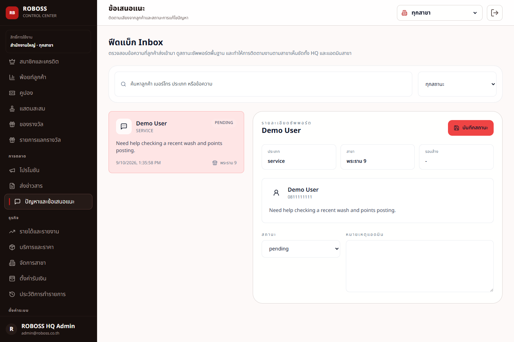
- 1ค้นหาเรื่อง
- 2เปิดรายละเอียด
- 3อัปเดตสถานะ
รายได้ ราคา สาขา และการรับเงิน
เมนูกลุ่มธุรกิจเปลี่ยนข้อมูลที่มีผลต่อยอดขายและการรับเงินจริง ควรใช้บัญชี HQ และมีผู้ตรวจทานเมื่อเปลี่ยนค่าสำคัญ
5.1 · REVENUE
รายได้และรายงาน
ดูยอดขายสุทธิ ยอดก่อนส่วนลด Refund รายการรอชำระ และผลงานตามสาขาหรือแพ็กเกจ
- เลือกช่วงวันที่และสาขาที่ต้องการวิเคราะห์
- อ่าน Metrics ด้านบน โดยแยกยอดยืนยันแล้วออกจากยอดรอชำระ
- ใช้ Breakdown เพื่อดูแพ็กเกจ ช่องทางรับเงิน และ Provider
ยอดรายงานไม่เท่ากับยอดธนาคารเสมอใช้หน้ารายการชำระเงินสำหรับกระทบยอดและ Refund
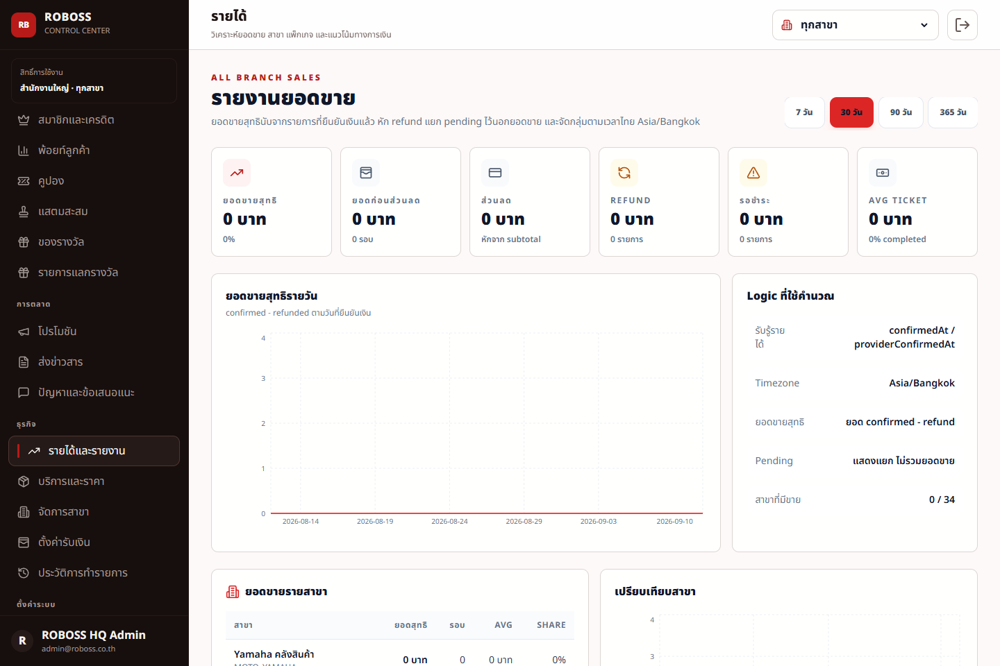
- 1ช่วงเวลาและสาขา
- 2ตัวเลขสรุป
- 3รายละเอียดแยกกลุ่ม
5.2 · PACKAGE
บริการและราคา
สร้างแพ็กเกจ กำหนดประเภทพาหนะ ราคา S/M/L ขั้นตอน และการเปิดขายตามสาขา
- เลือกแพ็กเกจจากรายการซ้าย หรือกดเพิ่มแพ็กเกจใหม่
- แก้ข้อมูล ราคา เวลา ภาพ และขั้นตอนบริการทางขวา
- กด บันทึกแพ็กเกจ แล้วตรวจหน้าลูกค้าว่าราคาและข้อความถูกต้อง
อย่าเปลี่ยนสิทธิ์ที่ขายไปแล้วหากต้องเปลี่ยนสาระสำคัญ ให้สร้างแผนใหม่เพื่อรักษาสิทธิ์ลูกค้าเดิม
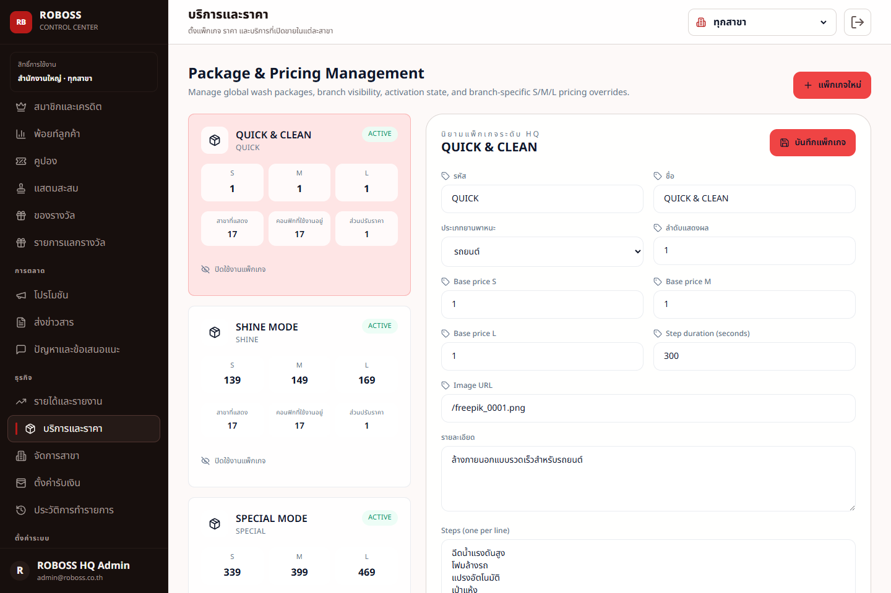
- 1เลือกแพ็กเกจ
- 2แก้รายละเอียด
- 3บันทึก
5.3 · BRANCH
จัดการสาขา
เก็บชื่อ รหัส ที่อยู่ พิกัด เวลาเปิด บัญชี PromptPay และรูปแบบการถือครองของแต่ละจุดบริการ
- เลือกสาขาจากรายการซ้าย หรือกดเพิ่มสาขา
- แก้ข้อมูลในแบบฟอร์มด้านขวา โดยเฉพาะพิกัด เวลา และข้อมูลรับเงิน
- กด บันทึกการเปลี่ยนแปลง และตรวจขอบเขตบัญชีผู้ดูแลสาขา
พิกัดและ PromptPay มีผลจริงค่าผิดอาจพาลูกค้าไปผิดที่หรือรับเงินเข้าผิดบัญชี
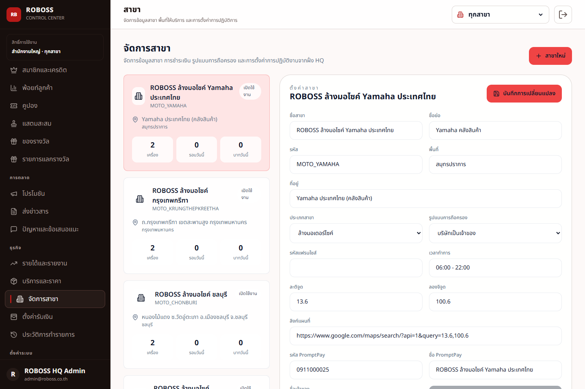
- 1เลือกสาขา
- 2แก้ข้อมูลจริง
- 3บันทึก
5.4 · PAYMENT SETUP
ตั้งค่ารับเงินแต่ละสาขา
กำหนด Payment Provider บัญชีรับเงิน การล็อกค่า และสถานะอนุมัติก่อนเปิดรับเงินจริง
- ดูตัวเลขสรุปว่ากี่สาขาเปิดใช้งาน พร้อมอนุมัติ หรือยังไม่พร้อม
- เลือกแถวของสาขาที่ต้องการตั้งค่า
- กรอก Credential ตรวจความสามารถ Webhook/Verify แล้วส่งให้ HQ อนุมัติและเปิดใช้
หน้าสรุปว่า “พร้อมใช้งาน” ยังไม่แทนการทดสอบเงินจริงต้องชำระแบบ Staging และตรวจ Webhook ก่อน Production
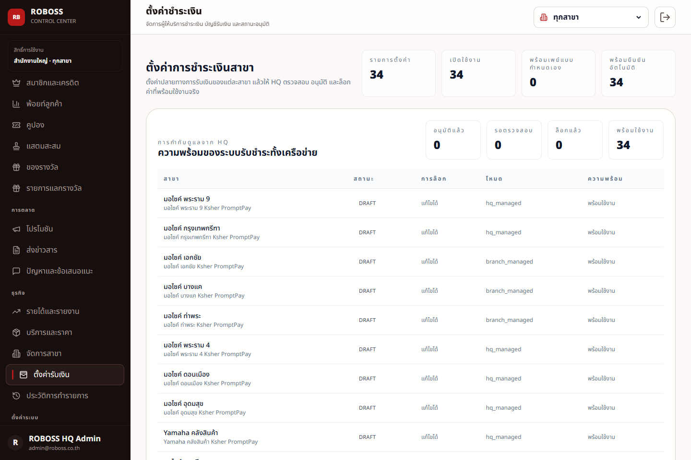
- 1สถานะทั้งเครือข่าย
- 2เลือกสาขา
- 3ตรวจความพร้อม
ผู้ดูแล นโยบาย และการตรวจสอบย้อนหลัง
เมนูนี้มีไว้กำกับสิทธิ์และมาตรฐานทั้งระบบ ใช้หลักสิทธิ์น้อยที่สุด: ให้แต่ละคนเห็นและทำได้เท่าที่จำเป็นต่อหน้าที่
6.1 · ACCESS
ผู้ดูแลและสิทธิ์
สร้างบัญชี HQ ผู้ดูแลสาขา หรือแคชเชียร์ พร้อมกำหนดสาขาและความสามารถรายสาขา
- เลือกบัญชีเดิมจากรายการซ้าย หรือกดเพิ่มผู้ดูแล
- กรอกชื่อ อีเมล รหัสผ่าน และเลือกบทบาท
- สำหรับผู้ดูแลสาขา ให้เปิดเฉพาะสาขาและสิทธิ์ที่ต้องใช้ แล้วกดสร้างหรือบันทึก
แคชเชียร์ไม่ควรได้สิทธิ์จัดการระบบให้ใช้เฉพาะรับชำระและดูคิว ลดความเสี่ยงการแก้ราคา เครื่อง หรือข้อมูลการเงิน
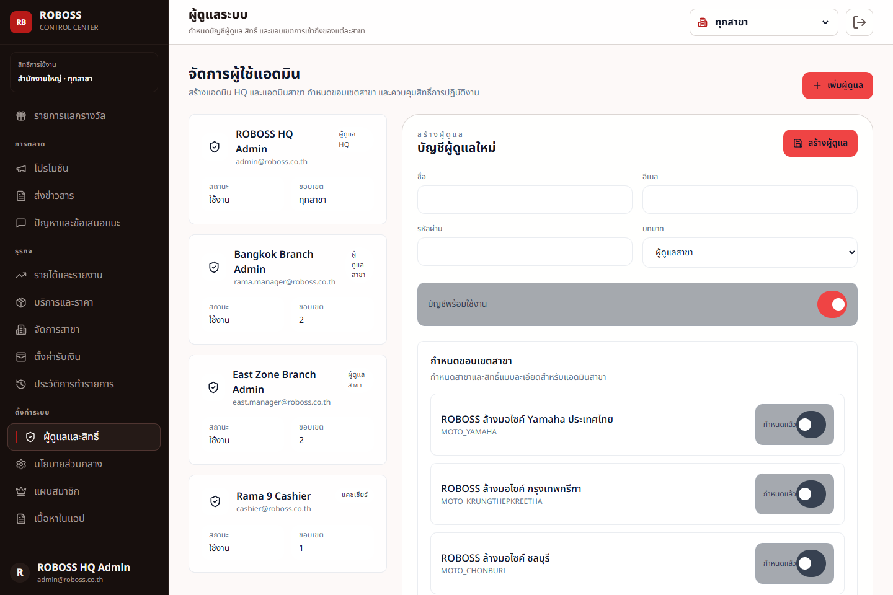
- 1บัญชีที่มีอยู่
- 2ข้อมูลและบทบาท
- 3ขอบเขตสาขา
6.2 · POLICY
นโยบายส่วนกลาง
ควบคุมค่ามาตรฐาน เช่น แต้ม ข้อจำกัดรอบล้าง ระยะเวลารอ และค่าที่ทุกสาขาควรใช้ร่วมกัน
- เลือกหัวข้อนโยบายที่ต้องการแก้
- อ่านผลกระทบและค่าปัจจุบันก่อนเปลี่ยน
- บันทึก แล้วตรวจ Audit และทดสอบกับสาขาตัวอย่าง
แจ้งสาขาก่อนเปลี่ยนค่ากลางการเปลี่ยนนโยบายอาจกระทบลูกค้าและขั้นตอนหน้าร้านพร้อมกันหลายสาขา
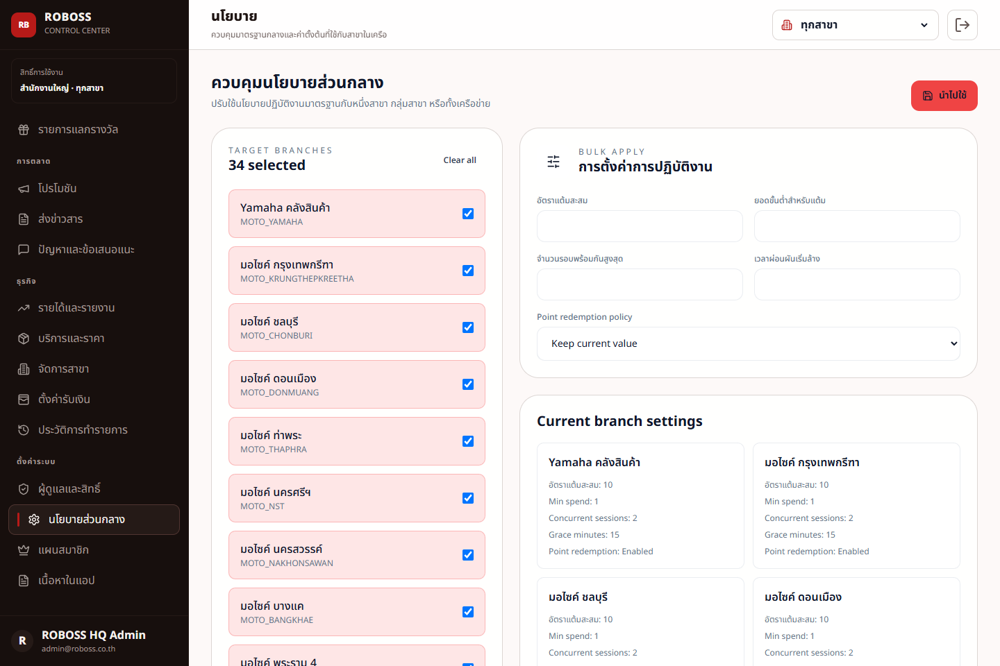
- 1เลือกหัวข้อ
- 2ตรวจและแก้ค่า
- 3บันทึก
6.3 · PLAN
แผนสมาชิก
สร้างแผนขายใหม่ กำหนดราคา เครดิต อายุสิทธิ์ และสถานะ โดยรักษาสิทธิ์ที่ขายไปแล้ว
- เลือกแผนเดิมเพื่อดูรายละเอียดและยอดที่ขาย
- เมื่อต้องเปลี่ยนสิทธิ์หลัก ให้สร้างแผนเวอร์ชันใหม่
- ปิดการขายแผนเก่าโดยไม่ลบสิทธิ์ของสมาชิกเดิม
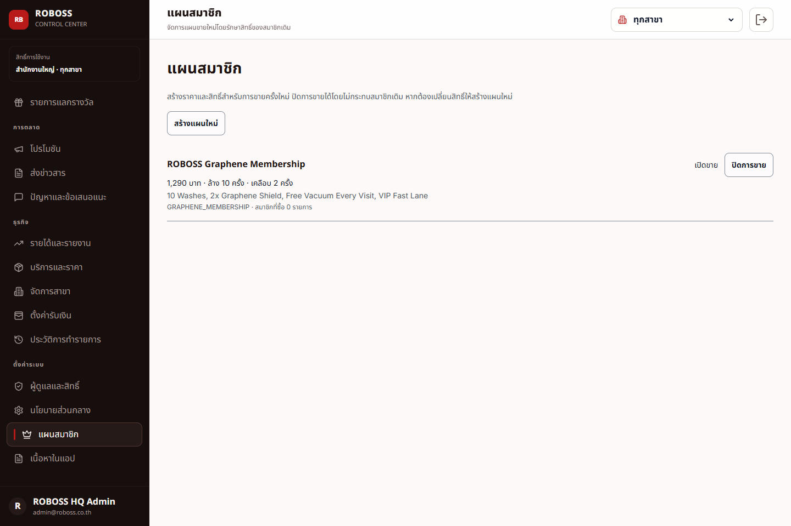
- 1เลือกแผนเดิม
- 2กำหนดสิทธิ์
- 3สร้างแผนใหม่
6.4 · CONTENT
เนื้อหาในแอป
จัดการคำถามที่พบบ่อยและบทความช่วยเหลือลูกค้า โดยแยกฉบับร่างออกจากเนื้อหาที่เผยแพร่
- เลือกหมวดเนื้อหาและค้นหาหัวข้อเดิม
- กดเพิ่มเนื้อหา หรือแก้ไขรายการที่มีอยู่
- ตรวจข้อความ ลิงก์ และรูป แล้วเปิดสถานะเผยแพร่เมื่อพร้อม
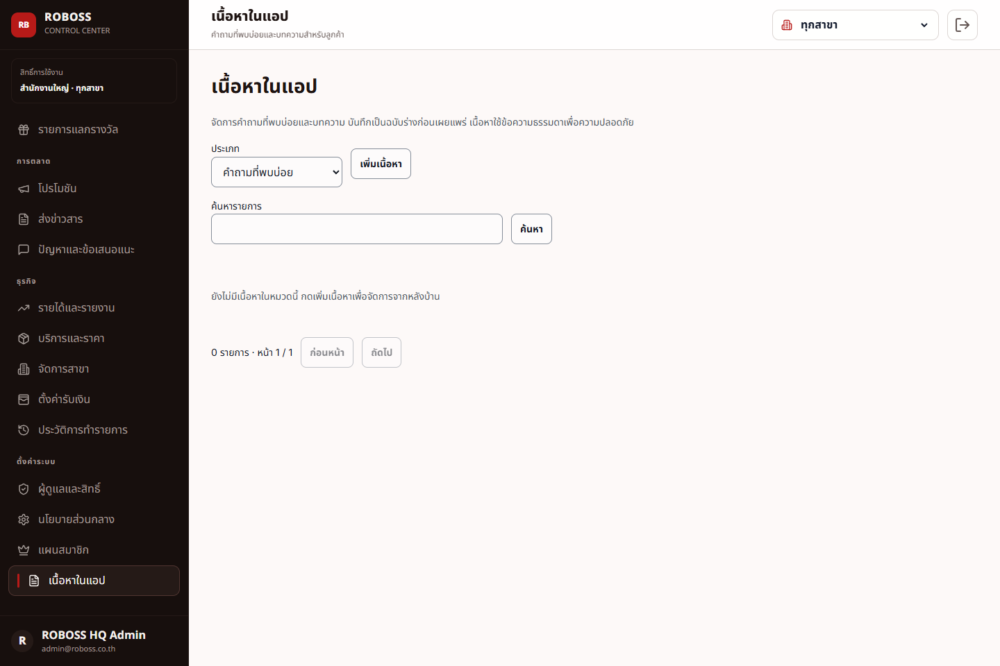
- 1เลือกหมวด
- 2แก้ไขเนื้อหา
- 3เพิ่มรายการใหม่
6.5 · AUDIT
ประวัติการทำรายการ
ตอบคำถามว่า ใคร ทำอะไร เมื่อไร ที่สาขาใด และกระทบข้อมูลรายการไหน
- ค้นหาชื่อการทำรายการ รหัส หรือข้อมูลอ้างอิง
- อ่านวันเวลาและชื่อผู้ปฏิบัติงาน
- เทียบสาขา Entity Type และ Entity ID กับเอกสารหรือ Ticket
ใช้ Audit ก่อนสรุปว่าเป็นบั๊กหลายกรณีเกิดจากการเปลี่ยนค่าหรือยืนยันมือ ซึ่งดูผู้ทำรายการได้จากหน้านี้
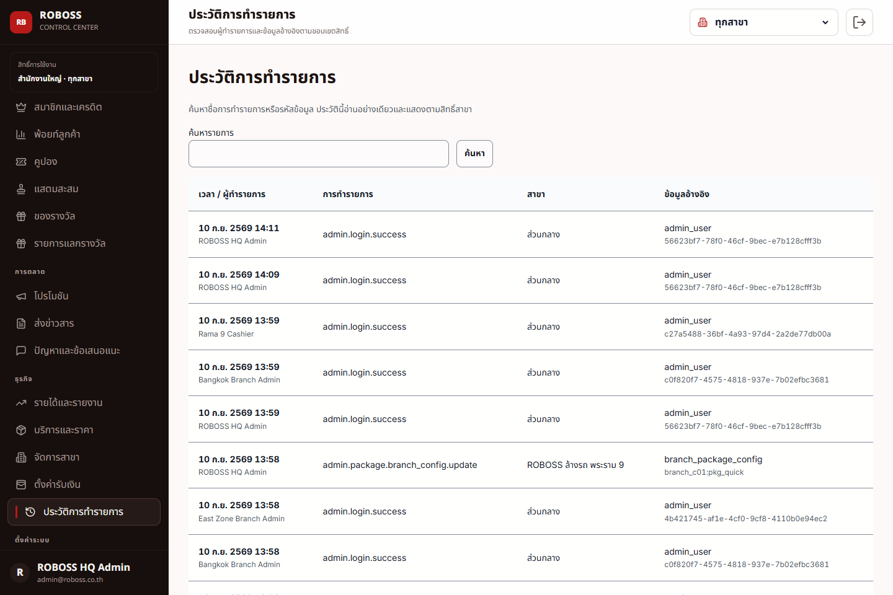
- 1ค้นหารายการ
- 2เวลาและผู้ทำ
- 3ข้อมูลอ้างอิง
เช็กลิสต์ก่อนเลิกงาน
- ไม่มีรอบล้างค้างผิดปกติในสถานะรอชำระหรือกำลังบริการ
- เครื่องที่เสียถูกตั้งเป็นโหมดซ่อม พร้อมมีหมายเหตุและผู้รับผิดชอบ
- เงินสด สลิป และยอดยืนยันในระบบตรงกับหลักฐานของกะ
- คำขอสมาชิกและรางวัลที่ดำเนินการแล้วมีสถานะถูกต้อง
- ปัญหาลูกค้ามีบันทึกว่าเกิดอะไร ตรวจอะไรแล้ว และต้องทำอะไรต่อ
- ออกจากระบบทุกครั้ง โดยเฉพาะอุปกรณ์ส่วนกลางของสาขา
เมื่อระบบกับหน้างานไม่ตรงกันอย่าสร้างรายการซ้ำ ให้จดรหัสสาขา เครื่อง รอบล้าง Payment Reference เวลา และภาพหลักฐาน แล้วส่งให้ HQ ตรวจ Audit ก่อน